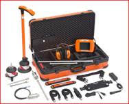

Geofono y Correlador digital SecorrPhon AC200 GNSS
Sistema profesional combinado de geófono y correlador digital diseñado para la detección y localización precisa de fugas en redes de agua presurizadas mediante el método electroacústico.
SecorrPhon AC200 GNSS
El SecorrPhon AC200 GNSS es un sistema profesional combinado de geófono y correlador digital diseñado para la detección y localización precisa de fugas en redes de agua presurizadas mediante el método electroacústico. Permite identificar la fuente de ruido generada por la fuga y determinar con exactitud su posición dentro de la tubería.
El equipo integra dos tecnologías complementarias: la detección acústica mediante geófono y la correlación digital entre sensores instalados en distintos puntos de la red. Esta combinación permite realizar inspecciones tanto en áreas específicas como en largas secciones de tuberías con altos niveles de ruido ambiental.
Dispone de una pantalla táctil a color de 5,7 pulgadas que muestra en tiempo real el nivel de ruido, el espectro de frecuencias y los resultados de medición. Su sistema de filtrado ajustable entre 0 y 12 kHz permite eliminar interferencias y mejorar la identificación del sonido de fuga.
El sistema incorpora GPS integrado que registra automáticamente las coordenadas de las fugas detectadas, facilitando la generación de informes mediante el software WaterCom. La comunicación entre los distintos componentes del equipo se realiza de forma totalmente inalámbrica mediante radio digital SDR.
El SeCorrPhon AC200 GNSS incluye sensores piezoeléctricos de alta sensibilidad y diferentes micrófonos especializados para válvulas, accesorios de red y superficie del terreno. Su autonomía supera las 10 horas de funcionamiento gracias a baterías recargables de ion-litio.
Gracias a su alto nivel de protección IP67 en la unidad central e IP68 en los sensores, el equipo puede utilizarse en condiciones ambientales exigentes, como lluvia, humedad o entornos industriales.
Características técnicas principales
- Sistema combinado geófono y correlador digital
- Pantalla táctil TFT 5,7" (640 × 480 px)
- Procesador digital 32 bit RISC
- Filtro de frecuencias ajustable 0 – 12 kHz
- Memoria interna 90 MB
- Comunicación inalámbrica SDR
- Alcance de transmisión de radio > 500 m
- GPS integrado para geolocalización de fugas
- Autonomía superior a 10 horas
- Baterías recargables de ion-litio
- Protección IP67 (unidad central) / IP68 (sensores)
- Temperatura de operación: -20 °C a +60 °C
Imágenes del producto

Videos de funcionamiento
Documentación
Descargar la ficha técnica completa del instrumento.
Descargar ficha técnica (PDF)